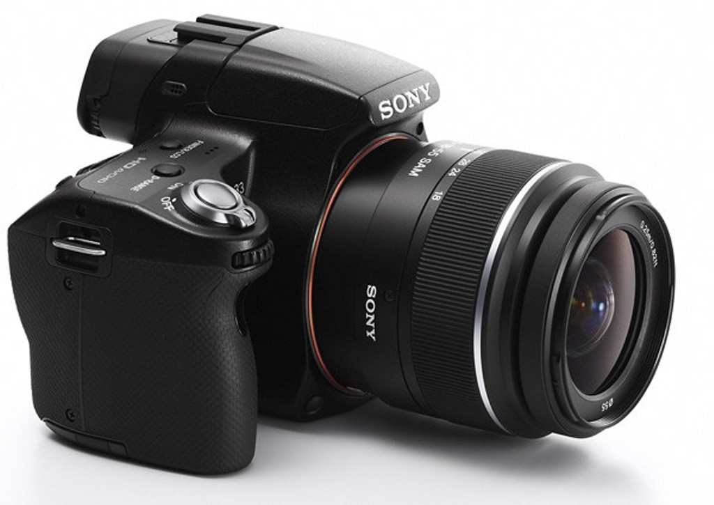

Welcome to Fotoaparatai
Fotoaparatai skelbimai | Plius.lt
2020.10.29 06:22Uždaryti Dėti skelbimą Nemokamai Skelbimai Mano paieškos Pagalba Prisijungti + Dėti skelbimą Nemokamai Meniu Pradžia Lietuva Garso, vaizdo, foto technika Foto technika, optika Fotoaparatai Kompaktiniai (skaitmeniniai) , 25 Veidrodiniai (skaitmeniniai) , 2 Sisteminiai (skaitmeniniai) , 3 Juostiniai , 60 Kita , 4 Visi Privatus Verslas Pigiausi Naujausi
Fotoaparatai skelbimai
(94) Domina fotoaparatai? Fotoaparatų skelbimai, pasiūlymai, kainos. prieš 8 val. FOTOAPARATAI FED 4 30 € Juostiniai Klaipėda Parduoda prieš 9 val. PANASONIC DMC-FS42 10 € Kompaktiniai (skaitmeniniai) Vilnius Parduoda prieš 9 val. Juostiniai fotoaparatai 30 € Juostiniai Vilnius Parduoda prieš 11 val. Sony Cyber-Shot DSC - P43 fotoaparatas 30 € Kompaktiniai (skaitmeniniai) Utena Parduoda prieš 12 val. Skaitmeninis fotoaparatas Samsung S750 9 € Kompaktiniai (skaitmeniniai) Vilnius Parduoda prieš 15 val. KODAK EASYSHARE M893 IS 32 € Kompaktiniai (skaitmeniniai) Keli miestai Parduoda prieš 18 val. Fotoaparatas KODAK EasyShare M550 9.99 € Kompaktiniai (skaitmeniniai) Vilnius Parduoda prieš 19 val. Panasonic LUMIX Lz 1 18 € Kompaktiniai (skaitmeniniai) Kaunas Parduoda prieš 21 val. Kodak fotoaparatas. 20 € Kompaktiniai (skaitmeniniai) Vilnius Parduoda prieš 21 val. FujiFilm FinePix T200 20 € Kompaktiniai (skaitmeniniai) Plungė Parduoda prieš 1 D. Sony DSC-W690 90 € Kompaktiniai (skaitmeniniai) Radviliškis Parduoda prieš 1 D. Fotoaparatas Canon PowerShot SX20 IS su priedais (120 Eur) 120 € Sisteminiai (skaitmeniniai) Vilnius Parduoda prieš 1 D. HP Photosmart R717 19 € Kompaktiniai (skaitmeniniai) Kaunas Parduoda prieš 1 D. Fotoaparatas „Casio Exilim EX Z77“ 33 € Sisteminiai (skaitmeniniai) Kaunas Parduoda prieš 1 D. Fotoaparatas „Olympus X925“ 19 € Kompaktiniai (skaitmeniniai) Kaunas Parduoda prieš 1 D. Canon 30 € Juostiniai Radviliškis Parduoda prieš 1 D. Fotoaparatas13 17 € Juostiniai Radviliškis Parduoda prieš 1 D. Konica 10 € Juostiniai Radviliškis Parduoda prieš 1 D. Fotoaparatas10 17 € Juostiniai Radviliškis Parduoda prieš 1 D. Canomatic fotoaparatas 15 € Juostiniai Radviliškis Parduoda prieš 1 D. Fotoaparatas2 17 € Juostiniai Radviliškis Parduoda prieš 1 D. Fotoaparatas3 17 € Juostiniai Radviliškis Parduoda prieš 1 D. Fotoaparatas5 5 € Juostiniai Radviliškis Parduoda prieš 1 D. Fotoaparatas6 17 € Juostiniai Radviliškis Parduoda prieš 1 D. Fotoaparatas7 17 € Juostiniai Radviliškis Parduoda prieš 1 D. Fotoaparatas9 17 € Juostiniai Radviliškis Parduoda prieš 1 D. Fotoaparatas12 17 € Juostiniai Radviliškis Parduoda prieš 1 D. Foto aparatas 1 1 € Juostiniai Radviliškis Parduoda prieš 1 D. Fotoaparatas4 17 € Juostiniai Radviliškis Parduoda prieš 1 D. Fotoaparatas8 17 € Juostiniai Radviliškis Parduoda 1 2 3 4 Kitas puslapis » Išsaugok pasirinktą paieškąParašykite savo nuomonę Kontaktai Reklama Apsipirk saugiai Naudojimo taisyklės Privatumo politika DUK © 2003-2020 Autogidas.lt | Domoplius.lt
